Todo empieza con una tabla. El Bloque 2 la lee desde casi cualquier formato, revisa que esté bien armada, propone un papel para cada columna y deduce la estructura del experimento: cuántos tratamientos, cuántos bloques, cuántas repeticiones y si el diseño está balanceado. Es el paso que más errores evita en todo el análisis.
El Bloque 2 abre con una tarjeta de teoría de seis temas plegables, titulada Before you upload. Conviene leerla antes de cargar la primera tabla, porque la app va a juzgar los datos con esos mismos criterios.
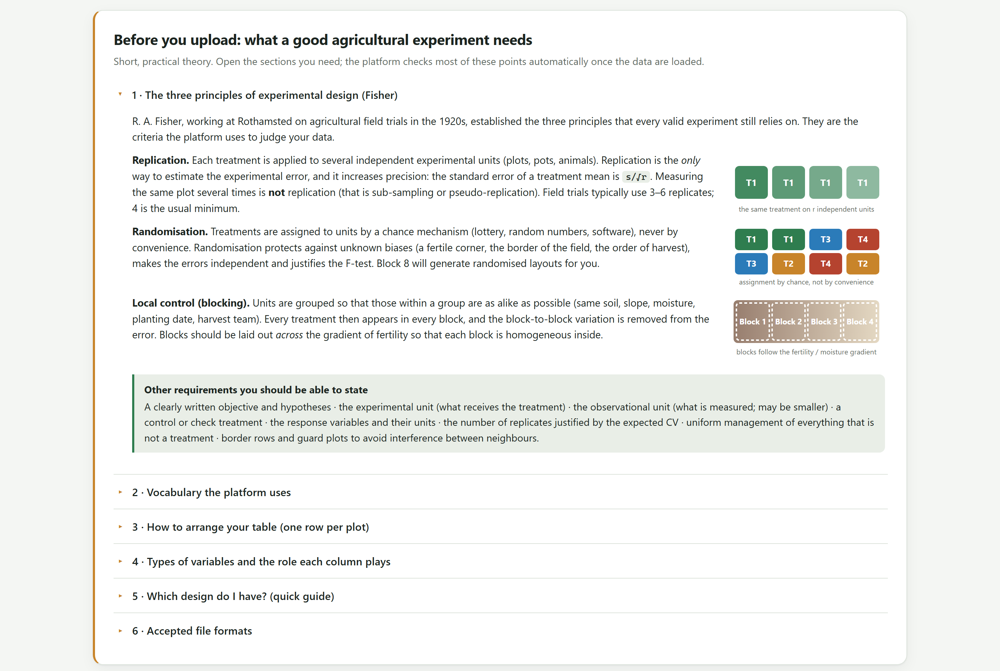
| Tema en la app | Qué contiene |
|---|---|
| 1 · The three principles of experimental design | Repetición, aleatorización y control local, con sus ilustraciones, y una lista de lo demás que un protocolo debe declarar: objetivo e hipótesis, unidad experimental y de observación, testigo, variables de respuesta con sus unidades, repeticiones justificadas por el CV esperado, manejo uniforme y bordes. |
| 2 · Vocabulary the platform uses | Tratamiento, factor, factorial, unidad experimental, repetición, bloque, variable de respuesta, covariable, error experimental y CV (tabla 3.2). |
| 3 · How to arrange your table | La regla de una fila por parcela, con un ejemplo correcto y uno incorrecto lado a lado, y siete consejos de captura. |
| 4 · Types of variables and the role each column plays | Escalas de medición (nominal, ordinal, conteos, proporciones, continuas, factor cuantitativo), el papel habitual de cada una y sus consecuencias para el análisis. |
| 5 · Which design do I have? | Guía rápida del acomodo al diseño y su modelo; la misma lógica de la regla de decisión de la sección 2.4. |
| 6 · Accepted file formats | Los formatos que lee la app (sección 3.2). |
| En la app | En español | Significado | Ejemplo |
|---|---|---|---|
| Treatment | Tratamiento | Una condición cuyo efecto quieres medir. | 0, 60, 120 y 180 kg de N por hectárea |
| Factor | Factor | Un grupo de tratamientos relacionados: sus niveles. | Factor «Nitrógeno» con 4 niveles |
| Factorial | Factorial | Dos o más factores estudiados juntos, en todas sus combinaciones. | 3 variedades × 3 dosis = 9 tratamientos |
| Experimental unit (plot) | Unidad experimental (parcela) | La unidad más pequeña que recibe un tratamiento de forma independiente. | Una parcela de 5 × 4 m, una maceta, un árbol |
| Replicate | Repetición | Un juego completo de todos los tratamientos (en diseños con bloques) o una unidad por tratamiento. | Bloque 1, bloque 2… |
| Block | Bloque | Un grupo de parcelas homogéneas que contiene todos los tratamientos. | Una franja de terreno a lo largo de la pendiente |
| Response variable | Variable de respuesta | Lo que se mide en cada unidad. | Rendimiento (t/ha), altura (cm), severidad (1–9) |
| Covariate | Covariable | Variable numérica medida antes de que actúe el tratamiento, para ajustar la respuesta. | Población inicial de plantas, N del suelo |
| Experimental error | Error experimental | Variación entre unidades tratadas igual; la vara con la que se juzgan las diferencias entre tratamientos. | El cuadrado medio del residual |
| CV (%) | Coeficiente de variación | Raíz del cuadrado medio del error entre la media general, por cien: la precisión del ensayo. | Rendimiento: menos de 15 a 20 % es aceptable |
La app lee tablas en formato largo: la primera fila trae los nombres de las columnas y cada fila siguiente es una unidad experimental. Los factores, bloques, filas y columnas van como columnas de texto o códigos, repetidos en cada fila; las respuestas, como columnas numéricas. Es el mismo acomodo que usan los programas estadísticos y las tablas dinámicas de las hojas de cálculo, y es el que produce una libreta de campo bien llevada (figura 1.3).
Yield_t_ha, Height_cm, Block.4.6, no 4,6 t/ha.NA. Un cero es un rendimiento de cero, no un dato faltante.Control, control y Control (con un espacio al final) son tres tratamientos distintos para una computadora.Una celda vacía y los códigos NA, N/A, NaN, null, none, ., -, --, ?, nd, s/d, missing, faltante y los errores de hoja de cálculo (#N/A, #DIV/0!, #VALUE!, #REF!) se tratan como datos faltantes, sin distinguir mayúsculas. Cualquier otro texto dentro de una columna numérica se marca como «números mezclados con texto».
La tarjeta 1 · Load your data recibe el archivo de tres maneras: arrastrándolo a la zona punteada, con un clic en ella para buscarlo, o pegando el contenido del portapapeles. Debajo hay siete ejemplos listos para cargar.
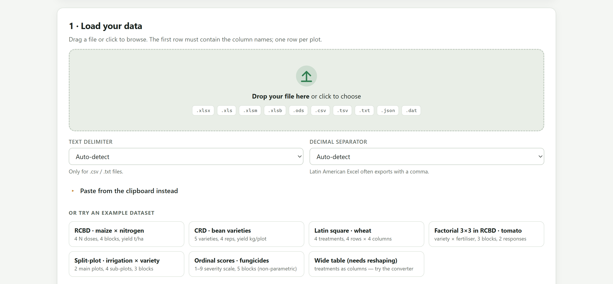
1 2 3 4 5| Formato | Extensiones | Cómo se lee |
|---|---|---|
| Libros de Excel | .xlsx, .xlsm, .xlsb, .xls | Se lee la primera hoja; si hay varias, el menú Sheet permite cambiar. Las celdas combinadas se detectan y se avisan. Las fechas se conservan como texto y no se analizan. |
| Formatos abiertos | .ods, .csv, .tsv, .txt, .dat, .prn | Texto con cualquier separador: coma, punto y coma, tabulador o barra vertical. Las comillas dobles protegen los campos que contienen el separador. Un archivo .tsv se lee siempre con tabuladores. |
| JSON | .json | Una lista de objetos (uno por parcela), una lista de listas, un objeto con columns y data, o un objeto con una lista por columna. |
| Portapapeles | — | Un rango copiado de Excel llega separado por tabuladores; se acepta también texto separado por comas o puntos y comas. Se registra como pasted-data.txt. |
| Plantilla del Bloque 8 | — | La libreta de campo que genera el Bloque 8 puede abrirse directamente aquí, con las columnas de respuesta vacías, para comprobar el diseño antes de sembrar (capítulo 9). |
Los siete ejemplos están en la carpeta data/ y la app los lee con una petición al servidor. Si abres index.html con doble clic, el navegador bloquea esa lectura por seguridad y la app avisa: Could not load the example. Open the app through server.ps1. Con Open AgriDesign.bat o con la versión en línea los ejemplos cargan al instante. Tus propios archivos se leen siempre, se abra la app como se abra.
Las hojas de cálculo en español suelen exportar 4,65. En automático la app cuenta cuántas celdas se ven como 4,65 y cuántas como 4.65 y elige el separador que domina; el mensaje de carga dice cuál usó (Decimal separator: comma). Si una tabla mezcla ambos, fija el separador correcto en el menú y vuelve a cargar: las celdas con el otro se leerán como faltantes y la columna se marcará con numbers mixed with text.
Al cargar, la app examina la rejilla antes de interpretarla: busca la fila de encabezados, cuenta las columnas, detecta filas de título, celdas combinadas, columnas sin nombre, nombres repetidos, filas con celdas de más, filas vacías y filas de totales. Cada hallazgo aparece como un aviso bajo el mensaje de carga; cuando no hay ninguno, un solo aviso verde dice Tidy table.
| Nivel | Aviso | Qué pasó y qué hace la app |
|---|---|---|
| ⚠ | N title rows above the header | Había filas con una o dos celdas antes de la fila ancha de encabezados (un título, una fecha). Se saltan y el encabezado se toma de la primera fila ancha; revisa la vista previa. |
| ⛔ | N merged cell ranges detected | Solo en libros de Excel. Las celdas combinadas dejan vacías todas menos la primera. Descombínalas y rellena cada fila; la app no adivina. |
| ⚠ | N columns without a name | Se nombran V1, V2… según su posición. Ponles un encabezado corto. |
| ⚠ | Duplicated column names | La segunda columna repetida recibe el sufijo _2, la tercera _3. |
| ⚠ | N rows with more cells than the header | Notas o totales escritos junto a la tabla. Las celdas sobrantes se descartan. |
| ℹ | N empty rows removed | Las filas en blanco se ignoran. |
| ⛔ | N summary rows (Total / Mean) inside the data | Filas cuya primera celda dice Total, Mean, Average, Promedio, Suma, Sum o Media. Se eliminan: la app calcula los promedios y esas filas se analizarían como parcelas. |
Para ver los avisos en acción, pega en Paste from the clipboard instead esta tabla, tal cual, y pulsa Use pasted data. Tiene una fila de título, una columna sin nombre con una nota al margen, el testigo escrito de tres maneras y una fila de totales.
Ensayo maíz 2026 Block,Treatment,Yield, 1,Control,4.6,nota al margen 1,control,6.2, 2,Control ,3.9, 2,control,5.5, 3,Control,4.3, 3,control,5.9, Total,,30.4,
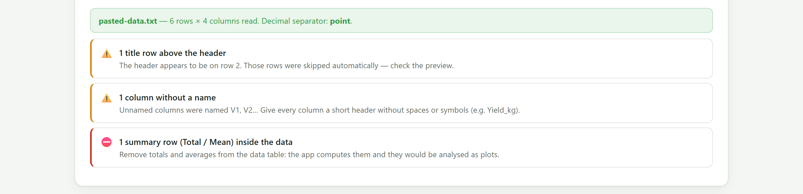
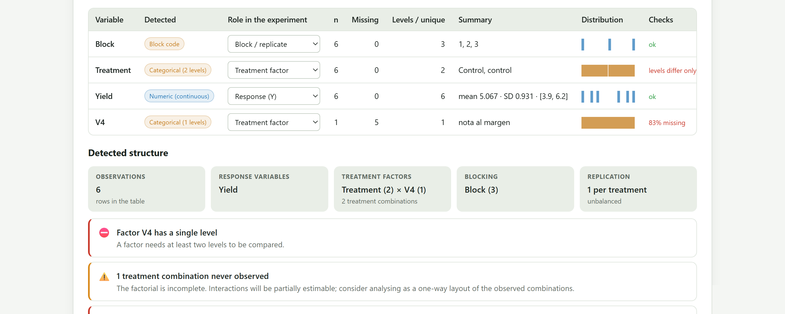
Los avisos describen lo que la app hizo para poder seguir (saltar, renombrar, descartar). Tu archivo original no cambia nunca. Si un aviso te sorprende, corrige la libreta de campo en la hoja de cálculo y vuelve a cargarla: es la única forma de que el informe final describa datos limpios y no un remiendo. El botón Download tidy CSV de la sección 3.5 guarda la versión ordenada que la app está usando, sin las columnas excluidas.
La tarjeta 2 · Variable roles and design structure muestra una fila por columna de la tabla. La app perfila cada columna, decide si es numérica o categórica y propone un papel en el experimento. El menú de la tercera columna permite corregirlo; todo lo que sigue en la app depende de esa elección.
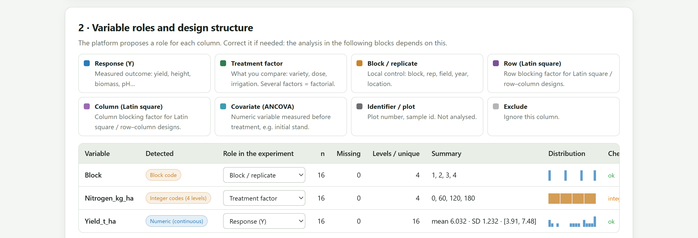
1 2 3 4 5 6| Papel | Qué es | Consecuencia en el análisis |
|---|---|---|
| Response (Y) | Lo que se midió: rendimiento, altura, biomasa, pH, calificación. Solo columnas numéricas. | Cada respuesta se analiza por separado en los Bloques 3 a 5. |
| Treatment factor | Lo que se compara: variedad, dosis, riego. Dos o más columnas con este papel forman un factorial. | Sus niveles son los tratamientos; sus combinaciones, las celdas del factorial. |
| Block / replicate | El control local: bloque, repetición, lote, año, localidad. | Entra al modelo como término de bloque; decide entre azar completo y bloques. |
| Row (Latin square) | La fila del cuadro latino o del diseño fila–columna. | Con una columna de Column, permite el cuadro latino. |
| Column (Latin square) | La columna del cuadro latino. | Ídem. |
| Covariate (ANCOVA) | Una variable numérica medida antes de que actúe el tratamiento: población inicial, peso inicial, análisis de suelo. | Entra al modelo como regresora; las medias se ajustan a su promedio. |
| Identifier / plot | Número de parcela, identificador de muestra, posición en el campo. | No se analiza; se conserva para los mapas de campo y el informe. |
| Exclude | Una columna que no interesa. | Se ignora y no va al CSV ordenado. |
| Si la columna… | la app propone… |
|---|---|
| se llama Block, Rep, Replicate, Bloque, Repetición o R (en cualquier combinación de mayúsculas) | Block / replicate |
| se llama Row, Fila, Hilera, Renglón · Col, Column, Columna | Row · Column |
| se llama Plot, Parcela, ID, Sample, Muestra, Obs… y todos sus valores son distintos | Identifier / plot |
| es de texto con hasta 40 niveles | Treatment factor |
| es de texto con todos los valores distintos, o con más de 40 categorías | Identifier · Exclude |
| es numérica con pocos valores enteros, repetidos casi el mismo número de veces, y no se llama como una medición | Treatment factor, marcada Integer codes (n levels) |
| es numérica, con pocos valores, pero con conteos desiguales o un nombre de medición (score, yield, height, peso, altura…) | Response (Y), con la señal integer codes → factor? |
| se llama Cov, Covariate, Covariable, Initial, Inicial, Stand… | Covariate (ANCOVA) |
| es numérica y no tiene variación | Exclude, marcada Constant |
| es numérica y ninguna regla anterior aplica | Response (Y) |
Son propuestas. Una columna con códigos 1, 2, 3, 4 para las variedades parece numérica: si la app la deja como respuesta, cámbiala a factor. Y al revés: una calificación 1 a 9 con conteos parejos puede tomarse por códigos de tratamiento.
| Etiqueta | Significado |
|---|---|
| Numeric (continuous) · Numeric (integers) | Al menos el 90 % de las celdas presentes son números; todos enteros o no. |
| Integer codes (n levels) | Números enteros con pocos valores y conteos parejos: parecen códigos de tratamiento. |
| Numeric (n distinct values) | Números con pocos valores distintos pero conteos desiguales: puede ser una escala corta. |
| Numeric (covariate?) | Numérica con nombre de covariable. |
| Categorical (n levels) | Texto con n niveles. |
| Block code · Row code · Column code | Reconocida por el nombre de la columna. |
| Identifier · Field position / plot number | Todos los valores distintos, o nombre de posición en el campo. |
| Constant | Sin variación. |
| Empty (to be filled in) | Columna sin valores: una plantilla de libreta de campo. |
| Señal | Qué significa y qué hacer |
|---|---|
| zero variance | Todos los valores iguales; no puede analizarse. |
| N missing · N % missing | Celdas faltantes; en rojo cuando pasan del 20 %. Las filas con respuesta faltante se omiten para esa variable. |
| numbers mixed with text | Entre el 50 y el 90 % de las celdas son números: hay texto, unidades o el otro separador decimal en algunas celdas. |
| skewed · strongly skewed | Asimetría mayor que 1, o que 2, en una respuesta. El Bloque 4 evaluará una transformación. |
| N outliers |z|>3 | Valores a más de tres desviaciones estándar de la media. Confirma en la libreta que no son errores de captura. |
| negative values | Una respuesta con valores negativos y ninguno igual a cero; poco habitual en rendimientos o pesos. |
| integer codes → factor? | La columna parece de códigos; confirma si es factor o respuesta. |
| levels differ only by case | Dos niveles se distinguen solo por mayúsculas: Control y control. Unifícalos en la libreta. |
| levels with trailing spaces | Un nivel tiene espacios al principio o al final. Elimínalos. |
Con los papeles asignados, la app deduce la estructura del experimento y la resume en tarjetas bajo Detected structure: observaciones, respuestas, factores con sus niveles y el número de combinaciones, bloqueo, covariables y repeticiones. Debajo, una lista de comprobaciones y, cuando hay un bloque o dos factores, una tabla de observaciones por celda. Cada vez que cambias un papel, todo se recalcula.
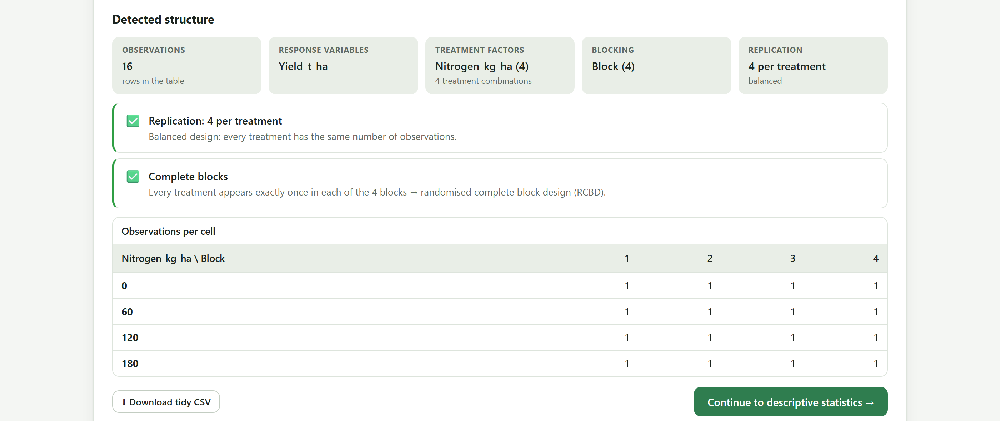
| Nivel | Comprobación | Qué significa |
|---|---|---|
| ⛔ | No response variable · No treatment factor | Falta un papel imprescindible. Sin ambos no se puede continuar. |
| ℹ | This looks like a wide table | Varias respuestas numéricas y ningún factor: los tratamientos están en las columnas. Usa el convertidor (sección 3.6). |
| ⛔ | Factor X has a single level | Un factor necesita al menos dos niveles. |
| ⚠ | Factor X has N levels | Más de 30 niveles: ¿es un factor o un identificador? |
| ⚠ | N treatment combinations never observed | El factorial está incompleto: hay celdas sin datos. Las interacciones se estiman en parte; considera analizar las combinaciones observadas como un solo factor. |
| ⛔ | Some treatments have a single observation | Sin repetición no hay error experimental. Casi siempre es una tabla ancha sin convertir o un papel mal asignado. |
| ⚠ | Only 2 replicates for some treatments | Dos repeticiones dan una estimación muy imprecisa del error; se recomiendan tres o más. |
| ✅ | Replication: r per treatment | Balanceado si todos los tratamientos tienen el mismo número de observaciones; si no, la app avisa que usará sumas de cuadrados tipo III. |
| ✅ | Complete blocks | Cada tratamiento aparece exactamente una vez en cada bloque: bloques completos al azar. |
| ✅ | Generalised complete blocks | Cada tratamiento aparece más de una vez por bloque: bloques generalizados, con interacción bloque × tratamiento estimable. |
| ℹ | Incomplete blocks | No todos los tratamientos están en todos los bloques: bloques incompletos (látice, alfa) o parcelas perdidas. |
| ⛔ | Blocking column with one level | Un bloque solo no bloquea nada. |
| ✅ | Latin square structure | Tratamientos, filas y columnas en igual número. |
| ⚠ | Row–column layout is not a Latin square | Los tres números no coinciden: se analizará como diseño fila–columna. |
| ℹ | Y is empty | La respuesta no tiene valores: es una plantilla de libreta de campo. La estructura ya es válida; llena las mediciones y vuelve a cargar. |
| ⚠ | Y: N missing values | Parcelas perdidas: el diseño deja de estar balanceado para esa variable. |
| ℹ | Y spans more than one order of magnitude | El máximo es más de 20 veces el mínimo: quizá haga falta un logaritmo. |
| ℹ | Y looks like a short ordinal scale | Enteros de 0 a 10 con pocos valores distintos o un nombre de calificación: conviene la ruta no paramétrica del Bloque 4. |
| ℹ | Y looks like a percentage | Valores entre 0 y 100 con nombre de porcentaje, incidencia, germinación o mortalidad: quizá haga falta arcoseno o logit. |
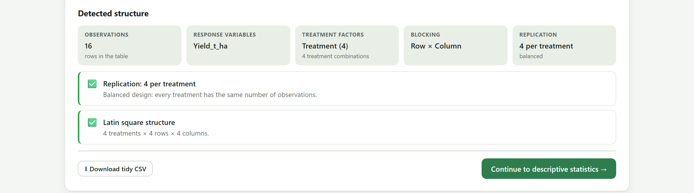
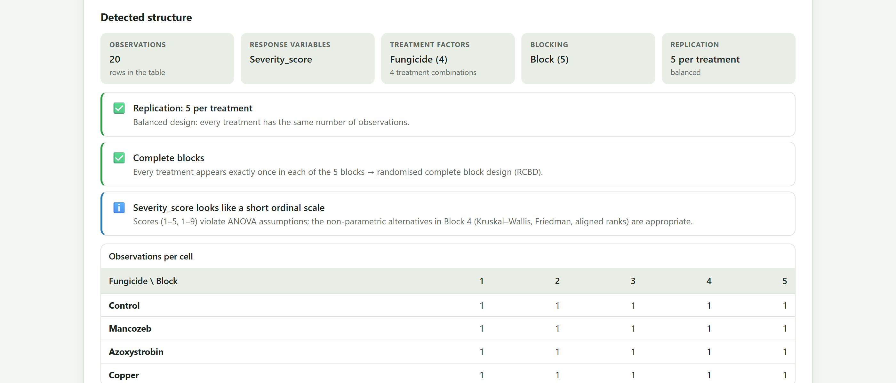
Severity_score parece una escala ordinal corta, con la recomendación de usar la ruta no paramétrica del Bloque 4.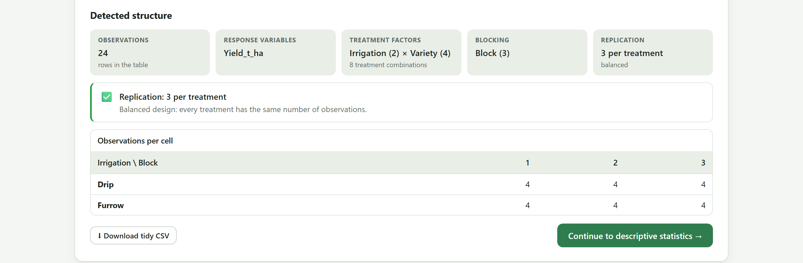
El botón Continue to descriptive statistics y los Bloques 3, 4, 5 y 7 de la barra superior se habilitan cuando hay al menos una respuesta con valores, al menos un factor y ninguna combinación con una sola observación. El Bloque 6 se activa después de correr un análisis en el Bloque 5. Mientras alguna comprobación en rojo siga en pantalla, el botón permanece gris.
Muchas libretas se capturan «anchas»: una fila por bloque y una columna por tratamiento, o una fila por parcela y una columna por fecha de muestreo. La app las lee, pero no encuentra el factor: todas las columnas numéricas parecen respuestas. La tarjeta Tool · Convert a wide table to long format apila esas columnas en una columna de nombres y una de valores.
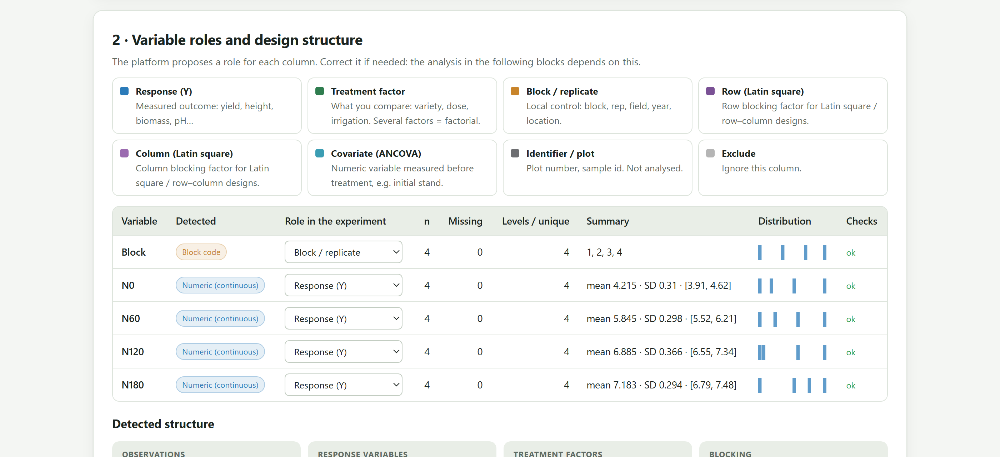
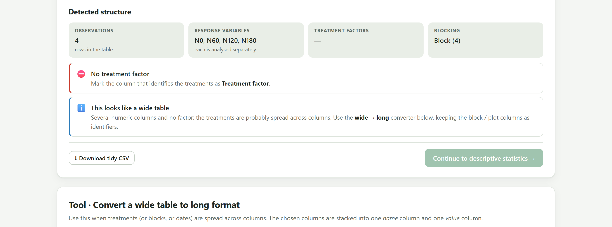
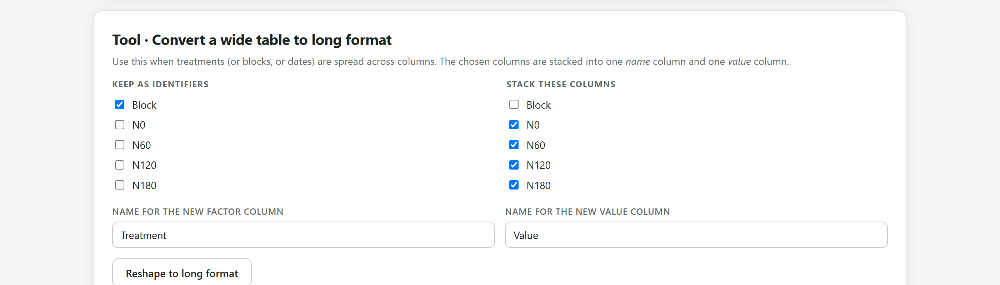
Block.Nitrogen) y el de la columna de valores en Name for the new value column (Yield_t_ha)._long.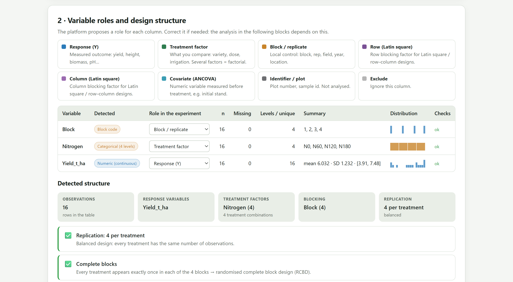
Nitrogen reconocida como factor categórico de 4 niveles (N0, N60, N120, N180) y Yield_t_ha como respuesta. La estructura es la misma que la del ejemplo de maíz y nitrógeno original: bloques completos, 4 repeticiones, balanceado.Los niveles del factor nuevo son los encabezados apilados, así que N0, N60… son texto y no números. Para el ANOVA y las pruebas de medias no importa. Si quieres ajustar la curva de respuesta a la dosis en el Bloque 5, los niveles deben ser numéricos: nombra las columnas de la tabla ancha 0, 60, 120, 180 antes de cargarla, o usa directamente la tabla larga con la dosis en números, como en el ejemplo original.
El ejemplo guía del manual, maíz y nitrógeno en bloques completos al azar, se carga y se revisa en menos de un minuto. Los siguientes capítulos parten de aquí.
Block como bloque, Nitrogen_kg_ha como factor (códigos enteros de 4 niveles: 0, 60, 120, 180) y Yield_t_ha como respuesta, con media 6.032, desviación estándar 1.232 y rango de 3.91 a 7.48 t/ha. No hay que cambiar nada.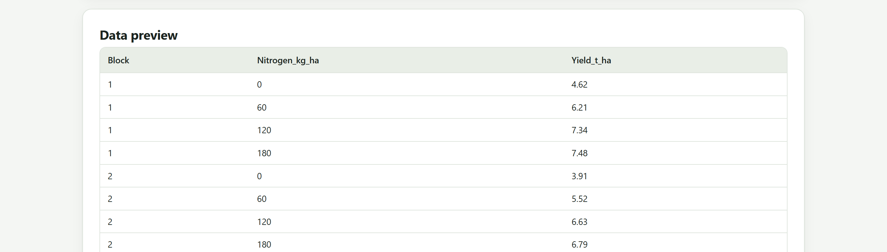
| Ejemplo | Lo que la app detecta |
|---|---|
| CRD · bean varieties | 20 parcelas; Plot como identificador (todos los valores distintos), Variety como factor de 5 niveles, Yield_kg_plot como respuesta; sin bloque: 4 repeticiones, balanceado. |
| Latin square · wheat | Row y Column por su nombre, Treatment con 4 niveles; Latin square structure (figura 3.7). |
| Factorial 3×3 in RCBD · tomato | 27 plantas; Variety y Fertilizer como factores (3 × 3 = 9 combinaciones), 3 bloques, dos respuestas: Yield_kg_plant y Height_cm, que se analizan por separado. |
| Split-plot · irrigation × variety | 24 parcelas; dos factores, 3 bloques, 3 repeticiones (figura 3.9). El diseño de parcelas divididas se declara en el Bloque 5. |
| Ordinal scores · fungicides | 20 parcelas, 4 fungicidas, 5 bloques y el aviso de escala ordinal (figura 3.8). |
| Wide table (needs reshaping) | Sin factor; hay que convertirla (sección 3.6). |
Con la tabla revisada y los papeles confirmados, el siguiente paso es mirar los datos antes de probar nada. El capítulo del Bloque 3 presenta la estadística descriptiva por tratamiento, bloque y combinación, el coeficiente de variación y los gráficos exploratorios.